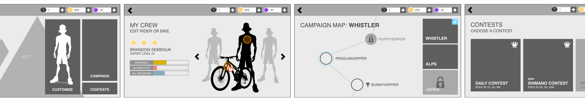

Design Process
A Living, Breathing Design
We focused on designing in phases and abiding to strict milestones with the design process. Overall, we were able to meet our deadlines on time and stayed on schedule with the UI design process. What was important though, was that we were able to stick to a schedule, as well as account for major game design changes that came to us midway through development.
We handled change through a stepwise process. First, we would analyze the impact of the change, and document how it would affect the current state of the game. After analysis, we would scope the change to minimize the amount of rework to existing features, and then proceed to wireframe, mockup, and implement the change. We kept our process well documented and concise in our design specification, to create transparency within the team as to what the state of the design was.
We revisited our wireframes many times and were able to efficiently come to solutions that would minimize the impact the change would make across the game
